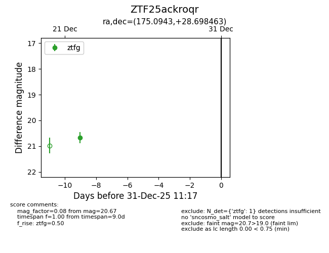
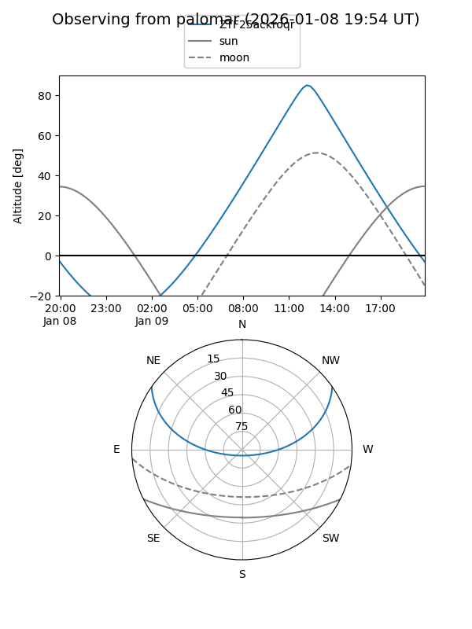

ZTF25ackroqr
Target ZTF25ackroqr at 2025-12-22 20:06
Aliases and brokers:
FINK: fink-portal.org/ZTF25ackroqr
Lasair: lasair-ztf.lsst.ac.uk/objects/ZTF25ackroqr
ALeRCE: alerce.online/object/ZTF25ackroqr
alt names
ZTF25ackroqr (ztf,fink_ztf)
Coordinates:
equatorial (ra, dec) = 175.0943,+28.69846
equatorial (HMS+DMS) = 11:40:22.64,+28:41:54.47
galactic (l, b) = (203.0808,+74.23808)
Flags:
Photometry:
last ztfg=20.67
1 ztfg detections
Lightcurve

Visibility


Additional plots